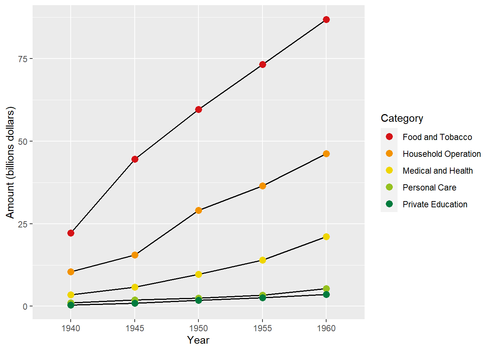

In this chapter, we’ll look at some of the most common plots and charts. We’ll discuss how to interpret and use these visualizations to make data-driven decisions. We’ll also explore how to create these plots and charts using ggplot2 and other graphic libraries.
The following commands will check whether the required R libraries already installed, if not, pacman will install and load the required libraries into your environment.
# Install pacmanif (!require("pacman"))install.packages("pacman" )# Use pacman p_load() to install and load other R librariespacman::p_load(1 tidyverse,2 viridis,3 ggsci,4 ComplexHeatmap,5 RColorBrewer,6 GGally,7 kableExtra,8 ggridges,9 factoextra)
1
An integrated data management and visualization library.
2
Color palettes for continuous and discrete variables, color blind friendly.
3
Color palettes based on scientific journals, movies, TV shows.
4
For visualizing heat maps and several plots alongside the heat maps. Provides powerful customization capabilities over the ggplot2’s geom_tile() and base heatmap() functions.
5
Color palettes for continuous and discrete variables.
6
Extension library of ggplot2. Plot complex plots in small steps by simplifying the commands. For exploratory data analysis and correlation analysis.
7
Just for render this document.
8
For ridgeline plot
9
For principal component analysis and visualization
1 Visualizing Amounts
1.1 Bar Plots
The bar plot is the most common way to visualize amounts, i.e., how many things you’ve already counted. Bar plots are versatile and easy to interpret. They are helpful for comparing various groupings of data. They can also be used to compare different values within the same dataset.
In this demo, we will create a data frame with two columns, name and value.
Make the aesthetics function: use a categorical variable name for X axis and numeric value for Y axis, and fill the bar plot with color by the names of the categories name.
finally call geom_bar(). You have to specify stat="identity" for this kind of data set.
In this case, use labs() to change the axes names, as well as legend name.
ggplot(data_1, aes(x = name, y = value, fill = name)) +geom_bar(stat ="identity") +labs(x ="New name", y ="New value") +scale_fill_npg() +theme(legend.position ="none")
1.1.2 Horizontal bar plot
To rotate the plot to another orientation, use coord_flip().
ggplot(data_1, aes(x = name, y = value, fill = name)) +geom_bar(stat ="identity") +labs(x ="New name", y ="New value") +coord_flip() +scale_fill_npg() +theme(legend.position ="none")
1.1.3 Bar plot with labeled text
To annotate the number in each bar plot, add geom_text to the command. Specify the variable you want to show the text in aes() of geom_text. You can adjust the labels’ position using hjust and vjust to move them in horizontal and vertical directions, respectively.
ggplot(data_1, aes(x = name, y = value, fill = name)) +geom_bar(stat ="identity") +geom_text(aes(label = value), vjust =-0.2) +labs(x ="New name", y ="New value")+scale_fill_npg() +theme(legend.position ="none")
1.2 Grouped and Stacked Bar Plot
We showed how to visualize quantitative amounts in a single variable in the previous section. Sometimes we’re interested in two categorical variables at once. For example, the mock data frame data_plant that collects data from multiple plant species and multiple conditions.
In the geom_bar(), use the argument position="dodge" to position the bars next to each other.
ggplot(data_plant, aes(fill = condition, y = value, x = species)) +geom_bar(position ="dodge", stat ="identity")+scale_fill_npg() +theme(legend.position ="none")
1.2.2 Small multiple bar plots
To make multiple bar plots, use facet_wrap(). Each panel will have its name defined by the variable specified. facet_wrap() fixes x and/or y axes scales using the argument scales.
ggplot(data_plant, aes(fill = condition, y = value, x = species)) +geom_bar(position ="dodge", stat ="identity") +facet_wrap( ~ species, scales ="free_x") +scale_fill_npg()
1.2.3 Stacked bar plot
Stack bar plots display subgroups on top of each other. The only thing to change to get this figure is to switch the position argument to stack by adding position = "stack" to the geom_bar() function.
ggplot(data_plant, aes(fill = condition, y = value, x = species)) +geom_bar(position ="stack", stat ="identity") +scale_fill_npg()
1.2.4 Percent stacked bar plot
Change the position of the percent stacked bar plot to “fill”. We can now study the evolution of each subgroup’s proportion in the overall sample by looking at the percentage of each subgroup.
ggplot(data_plant, aes(fill = condition, y = value, x = species)) +geom_bar(position ="fill", stat ="identity") +scale_fill_npg()
1.3 Dot Plots
Bars have a limitation that they need to start at zero, so the length is proportional to the amount. Your plot would be vague. We can indicate amounts by placing dots along the x or y axis.
dot plot vs scatter plot
A dot plot is a graph that uses dots to indicate the frequency or amount of a certain value. This makes it easier to compare values, as the dots line up along a continuous axis. A scatter plot, on the other hand, uses points to represent two different variables. This makes it easier to identify the relationship between the two variables.
1.3.1 Simple dot plot
We’ll show you a simple dot plot on US precipitation. Start by loading the data into R and selecting the 30 most precipitated cities in the US.
# Prepare data of Annual Precipitation in US CitiesUS_precip <-data.frame(city =names(precip), precipitation = precip)US_precip <- US_precip %>%top_n(n =30) %>%arrange(desc(precipitation))
Selecting by precipitation
Example of US_precip data
city
precipitation
Mobile
67.0
Miami
59.8
San Juan
59.2
New Orleans
56.8
Juneau
54.7
Jacksonville
54.5
Jackson
49.2
Memphis
49.1
Little Rock
48.5
Atlanta
48.3
Houston
48.2
Columbia
46.4
Nashville
46.0
Atlantic City
45.5
Norfolk
44.7
Hartford
43.4
Louisville
43.1
Providence
42.8
Charlotte
42.7
Richmond
42.6
Boston
42.5
Raleigh
42.5
Baltimore
41.8
Portland
40.8
Charleston
40.8
Wilmington
40.2
New York
40.2
Philadelphia
39.9
Cincinnati
39.0
Washington
38.9
The plot will be a value-ordered dot plot. Basically, ggplot2 will arrange the data alphabetically or ascendingly arranged. It won’t work if you order the data frame before defining ggplot(). Instead, you can arrange the data using reorder(variable_to_order, variable_to_rely_on) during aesthetics mapping as follows.
Time can be considered as one of the variables, and it is in an inherent order. Line graphs help us visualize this temporal order. Line graphs can be used to show trends over time, allowing us to compare values at different points in time. They are useful for highlighting changes in data ove
We will use the USPersonalExpenditure data set. This data set consists of United States personal expenditures (in billions of dollars) in the categories; food and tobacco, household operation, medical and health, personal care, and private education for the years 1940, 1945, 1950, 1955 and 1960.
# Prepare dataUS_exp <-data.frame(USPersonalExpenditure) %>%rownames_to_column(var ="Category") %>%pivot_longer(!Category) %>%mutate(name =gsub("X", "", name)) %>%rename(year = name)ggplot(US_exp, aes(x = year, y = value, group = Category, color = Category)) +geom_line(linewidth =0.7, color ="black") +geom_point(size =3) +scale_color_frontiers() +labs(x ="Year", y ="Amount (billions dollars)")

1.4 Heatmaps
As an alternative to mapping data values onto positions via bars or dots, we can map data values onto colors. Such a figure is called a heat map. Which is a graphical representation of data where the individual values contained in a matrix are represented as colors.
1.4.1 Basic Heatmap with base R
The heatmap() function is natively provided in R. Which required the data in a matrix format, them heatmap() is then run clustering algorithm and visualize the result with dendrogram. We cal use argument scale to normalize matrix to balance the heat colors for easy infer the trend of the data.
# The mtcars dataset:data <-as.matrix(mtcars)# Default Heatmapheatmap(data)# Use 'scale' to normalizeheatmap(data, scale="column")
Most basic heatmap
Scaled value by column
1.4.2 Heatmap with geom_tile()
We will use USJudgeRatings data set, which reports Lawyers’ Ratings of State Judges in the US Superior Court.
# A tibble: 6 × 3
company name value
<chr> <chr> <dbl>
1 AARONSON,L.H. CONT 5.7
2 AARONSON,L.H. INTG 7.9
3 AARONSON,L.H. DMNR 7.7
4 AARONSON,L.H. DILG 7.3
5 AARONSON,L.H. CFMG 7.1
6 AARONSON,L.H. DECI 7.4
# Plotggplot(dt_USJudgeRatings, aes(x = name, y = company, fill = value)) +geom_tile() +scale_fill_distiller(palette ="Reds") +labs(x ="Features", y =NULL)
1.4.3 Heatmap with Heatmap() of ComplexHeatmap
With ComplexHeatmap you’re able to visualize associations between different data sources, reveal patterns, and arrange multiple heat maps in a way that’s highly flexible. In this analysis, we’ll use the same data set as above, USJudgeRatings.
In a dataset, you might want to know how a variable is distributed. You can look at the distribution of a variable to get a better idea. Visualizations like histograms, boxplots, and density plots help with this. Data patterns and outliers can be identified this way. This can help you understand the data better, and draw conclusions from it. It can also help you decide which type of analysis to use. ### Histogram
A histogram can be easily built with ggplot2’s geom_histogram() function. The input only needs one numerical variable. You might get a warning message during the plot regarding the bin width or stratification as explained in the next section.
2.0.1 Basic histogram
A histogram is created by binning data, or stratifying data into ranges of frequency, so how they look depends on the bin width. Bin widths are usually chosen by default in visualization programs.
users may have to pick the appropriate bin width by hand. The histogram gets too peaky and busy if the bin width is too small. There might be a lot of noise in the data. In contrast, too wide a bin width can blur smaller features in the data distribution, like the dip around age 10.
The density plot shows the underlying probability distribution of the data by drawing a continuous curve. An estimation procedure called kernel density estimation is commonly used to estimate this curve from the data. This estimation procedure is used to estimate the probability of the data falling within a particular range. The resulting curve is then plotted on a graph, allowing for easier comparison and analysis.
Scale for fill is already present.
Adding another scale for fill, which will replace the existing scale.
2.2 Box Plot and Violin Plot
A box plot gives a nice summary of one or more numeric variables. A boxplot is composed of several elements:
Anatomy of box plot. Image from https://www.leansigmacorporation.com/box-plot-with-minitab
A median is a line that divides the box into two parts. If the median is 10, it means there are the same number of data points above and below the line.
There are two quartiles at the ends of the box, the upper (Q3) and lower (Q1). A third quartile of 15 indicates that 75% of observations are below that level.
The difference between Quartiles 1 and 3 is called the interquartile range (IQR)
The extreme line shows Q3+1.5 x IQR to Q1-1.5 x IQR (the highest and lowest value excluding outliers). Dots (or other markers) beyond the extreme line shows potential outliers.
However, you should keep in mind that data distribution is hidden behind each box. Normal distributions could look exactly like bimodal distributions. It is recommended to consider a violin plot or a ridgline chart instead.
We will demonstrate on ToothGrowth data set. The data set showed the Effect of Vitamin C on Tooth Growth in Guinea Pigs.
Example of ToothGrowth data set
len
supp
dose
4.2
VC
0.5
11.5
VC
0.5
7.3
VC
0.5
5.8
VC
0.5
6.4
VC
0.5
10.0
VC
0.5
11.2
VC
0.5
11.2
VC
0.5
5.2
VC
0.5
7.0
VC
0.5
16.5
VC
1.0
16.5
VC
1.0
15.2
VC
1.0
17.3
VC
1.0
22.5
VC
1.0
17.3
VC
1.0
13.6
VC
1.0
14.5
VC
1.0
18.8
VC
1.0
15.5
VC
1.0
ggplot(ToothGrowth, aes(x =as.factor(dose), y = len, fill =as.factor(dose), group =as.factor(dose))) +geom_boxplot() +scale_fill_npg() +geom_jitter(color="grey30", size=2, alpha=0.7, width =0.2) +labs(x ="Dose (mg/day)", y ="Tooth length (mm)") +theme(legend.position ="none")ggplot(ToothGrowth, aes(x =as.factor(dose), y = len, fill =as.factor(dose), group =as.factor(dose))) +geom_violin() +scale_fill_npg() +geom_jitter(color="grey30", size=2, alpha=0.7, width =0.2) +labs(x ="Dose (mg/day)", y ="Tooth length (mm)") +theme(legend.position ="none")ggplot(ToothGrowth, aes(x =as.factor(dose), y = len, fill =as.factor(dose), group =as.factor(dose))) +geom_violin() +scale_fill_npg() +geom_boxplot(fill ="white", width =0.2) +labs(x ="Dose (mg/day)", y ="Tooth length (mm)") +theme(legend.position ="none")
Box plot with jitters
Violin plot with jitters
Box with violin plot
2.2.1 Ridgeline plot
Previous section showed how to visualize the distribution stack horizontally with histograms and density plots. To expand on this idea, we’ll stagger the distribution plots vertically. Ridgeline plots look like mountain ridgelines, so they’re called that. The ridgeline plot is a good way to show trends in distributions. This example checks the distribution of diamond prices based on their quality.
This graph is made using the ggridges library, which is a ggplot2 extension and compatible with the syntax of the ggplot2. For the X axis, we specify the price column, and for the Y axis, we specify the cut column. By adding 'fill=cut', we can use one color per category and display them separately.
ggplot(diamonds, aes(x = price, y = cut, fill = cut)) +geom_density_ridges() +theme(legend.position ="none")
Picking joint bandwidth of 458
3 Visualizing Proportions
In many cases, we want to show how something breaks down into parts that each represent a portion of the whole. Among data scientists, pie charts are often maligned because they are ubiquitous in business presentations.
# Piechart with data labels## Compute the position of labelsdata_2 <- data %>%arrange(desc(group)) %>%mutate(prop = value /sum(data$value) *100) %>%mutate(ypos =cumsum(prop)-0.5*prop)
For accurate representation of data, alternative plots like percent stacked bar charts or streamlined plots should be considered instead of pie charts. Pie charts can make it hard to compare fractions since the relative sizes are hard to see. So if you want a more accurate representation of the data, you should use another type of chart.
4 Visualizing x-y Relationships
A dataset may contain two or more quantitative variables, and we might be interested in how they relate. In order to plot just the relationship between two variables, such as height and weight, we use a scatter plot. The bubble chart, scatter plot matrix, or correlogram are all good options if we want to show more than two variables at once. Further, principal component analysis is great for high-dimensional datasets, i.e., observing multiple variables at once.
4.1 Scatter Plot
In a scatterplot, two variables are plotted along two axes. It shows how they’re related, eventually revealing a correlation. Here the relationship between Petal width and Petal length in iris data set will demonstrated.
Adding a linear trend to a scatter plot helps the reader identify patterns. The linear trend also helps to identify outliers, as points that are far from the trend are easily visible. It can also be used to make predictions about future values based on current data. geom_smooth() in ggplot2 allows you to add the linear trend and confidence interval around it by using "se = TRUE"
ggplot(mtcars, aes(x = disp, y = mpg)) +geom_point(alpha =0.8, size =2) +geom_smooth(method ="lm", color ="red") +labs(x ="Miles/(US) gallon",y ="Displacement (cu.in.)")
`geom_smooth()` using formula = 'y ~ x'
4.2 Correlograms
When we have more than three or four variables, all-against-all scatter plots get a little complicated. Rather than presenting raw data, it’s better to quantify the amount of association between pairs of variables. Correlation coefficients are a common way to do this.
The correlation coefficient r measures how much two variables correlate between -1 and 1. A value of r = 0 means there is no association whatsoever, and a value of 1 or -1 indicates an ideal association. There are two kinds of correlation coefficients: correlated (larger values in one variable coincide with larger values in the other) or anticorrelated (larger values in one variable coincide with smaller values in the other).
Here’s a quick demonstration of all-against-all correlation analysis and a correlogram plotted using the mtcars data set.
# Create data data <-data.frame(mtcars)# Check correlation between variables, default uses Pearsoncor_mtcars <-cor(data)
Example of all-against-all correlation coefficient in mtcars data
mpg
cyl
disp
hp
drat
wt
qsec
vs
am
gear
carb
mpg
1.0000000
-0.8521620
-0.8475514
-0.7761684
0.6811719
-0.8676594
0.4186840
0.6640389
0.5998324
0.4802848
-0.5509251
cyl
-0.8521620
1.0000000
0.9020329
0.8324475
-0.6999381
0.7824958
-0.5912421
-0.8108118
-0.5226070
-0.4926866
0.5269883
disp
-0.8475514
0.9020329
1.0000000
0.7909486
-0.7102139
0.8879799
-0.4336979
-0.7104159
-0.5912270
-0.5555692
0.3949769
hp
-0.7761684
0.8324475
0.7909486
1.0000000
-0.4487591
0.6587479
-0.7082234
-0.7230967
-0.2432043
-0.1257043
0.7498125
drat
0.6811719
-0.6999381
-0.7102139
-0.4487591
1.0000000
-0.7124406
0.0912048
0.4402785
0.7127111
0.6996101
-0.0907898
wt
-0.8676594
0.7824958
0.8879799
0.6587479
-0.7124406
1.0000000
-0.1747159
-0.5549157
-0.6924953
-0.5832870
0.4276059
qsec
0.4186840
-0.5912421
-0.4336979
-0.7082234
0.0912048
-0.1747159
1.0000000
0.7445354
-0.2298609
-0.2126822
-0.6562492
vs
0.6640389
-0.8108118
-0.7104159
-0.7230967
0.4402785
-0.5549157
0.7445354
1.0000000
0.1683451
0.2060233
-0.5696071
am
0.5998324
-0.5226070
-0.5912270
-0.2432043
0.7127111
-0.6924953
-0.2298609
0.1683451
1.0000000
0.7940588
0.0575344
gear
0.4802848
-0.4926866
-0.5555692
-0.1257043
0.6996101
-0.5832870
-0.2126822
0.2060233
0.7940588
1.0000000
0.2740728
carb
-0.5509251
0.5269883
0.3949769
0.7498125
-0.0907898
0.4276059
-0.6562492
-0.5696071
0.0575344
0.2740728
1.0000000
# visualization of correlations## Squared correlogramggcorr(data, method =c("everything", "pearson"))
## Circle correlogramggcorr(data, method =c("everything", "pearson"), geom ="circle",min_size =5,max_size =10)
4.3 Dimension Reduction
High-dimensional datasets commonly have multiple correlated variables that convey overlapping information, so dimension reduction relies on that. A smaller number of key dimensions can be reduced without losing data characteristics.
There are many dimension reduction techniques. But, the most widely used method is principal components analysis (PCA) for exploring the data. PCA introduces an additional set of variables (called principal components, PCs) by linear combination of the original variables in the data, standardized to zero mean and unit variance. PCs are chosen to be uncorrelated, and they are ordered so the first component captures the most variation in the data, and each subsequent component captures less and less. In most cases, you can see the key features of data from the first two or three PCs.
We’ll show you how to compute and visualize PCA in R using the prcomp() function and the factoextra package. To show PCA, the factoextra’s built-in data, a Decathlon2.active, will be used.
Visualize graph of individuals. Individuals with a similar profile are grouped together.
# Individual PCAfviz_pca_ind(res.pca,col.ind ="cos2", # Color by the quality of representationgradient.cols =c("#00AFBB", "#E7B800", "#FC4E07"),repel =TRUE# Avoid text overlapping )
Graph of variables. Positive correlated variables point to the same side of the plot. Negative correlated variables point to opposite sides of the graph.
# Variable PCAfviz_pca_var(res.pca,col.var ="contrib", # Color by contributions to the PCgradient.cols =c("#00AFBB", "#E7B800", "#FC4E07"),repel =TRUE# Avoid text overlapping )